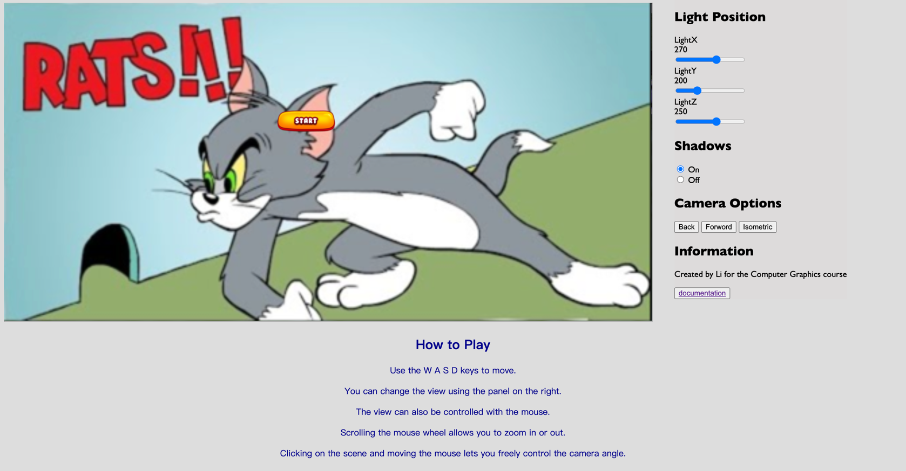
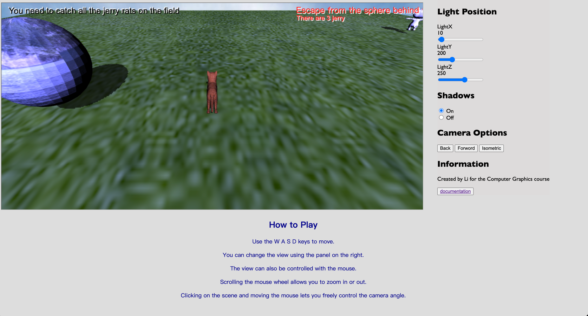

应用程序描述及其使用
Tom和Jerry是我们从小就喜欢的迪士尼动画片，而他们的关系也是亦敌亦友，相爱相杀。
在这个游戏中，玩家模拟成为Tom猫，需要找到所有的场地上的老鼠，且必须躲避来自主人的追赶。
如果主人抓到Tom猫的时候，而Tom猫没有抓住所有的老鼠，会被惩罚，游戏结束。
游戏的目的是在有限的场地内，抓捕所有的老鼠，且及时躲避主人的追赶。 但要小心！ 如果你走出地图，你会被淘汰！
已做出的选择和使用的WebGL功能说明
为了实现场景，使用了多种技术。
3D对象
通过应用纹理和透视视图实现了一个立方体的天空盒，目的是创造一个无限世界的感觉。
然后，通过创建一个应用了草地纹理的平面，试图呈现一个开放环境，使环境“生动”起来。
平面和地图的尺寸是一致的，事实上，离开平面相当于进入“游戏结束”屏幕，玩家可以通过“重试”按钮重新开始游戏。
场景由从Wavefront OBJ格式文件中导入的多个网格组成。
Tom猫和Jerry鼠的网格非常复杂（从sketchfab.com网站获取）。
为了将网格导入场景中，使用了utils文件中的loadObj函数。
纹理
为场景中的每个对象都应用了纹理。
纹理的实现从课程中提供的示例代码开始。
纹理是通过WebGL提供的“gl.createTexture()”和“gl.texImage2D()”函数创建的，这些函数在可能的情况下对图像应用“mipmap”技术。 如果不可能，则设置默认参数来管理它。
最后，Tom猫的主人是通过将我的照片作为纹理应用到球体对象上来实现的。

光照和阴影
我尝试通过在场景上方放置一个光源来尽可能地模拟自然光。 光是定向的，并利用了深度纹理，使用深度坐标计算哪些对象处于阴影中（以及在哪一侧）。
用户可以根据其轴修改光源的位置。
我设置了一个偏差来限制称为“阴影粉刺”的像素化阴影效果。
用户还可以选择不渲染阴影，以便在希望在性能较低的计算机上运行游戏时减轻工作负载。
通过这种技术照亮场景的一个问题是，阴影显得有些像素化（尽管偏差非常低）。
这是因为对象的多边形数量较少，因此在启用阴影时显得更加不平滑。
为了改善视觉效果，可以增加多边形的数量，或者（作为替代）可以实现一种有效的阴影算法，以细化阴影的形状。
移动和碰撞
场景中Tom的移动是基于课程中看到的cg-car2.js文件。
用于移动的物理是汽车动画函数的简化版本，而无需管理车轮。
地图中的移动具有一些碰撞。
通过使用被控制角色的位置，可以确定是否与追赶我们的BOSS发生了碰撞。
玩家角色的位置还用于创建主人使用的追踪算法，主人通过控制Tom猫在x轴和z轴上的位置，更新其方向，并在每帧修改主人的位置。
实现了两种类型的碰撞：
- 与主人的碰撞
- 与Jerry鼠的碰撞
当主人抓住玩家时，游戏进入游戏结束状态，通过显示相应的屏幕，可以重新开始游戏。
与Jerry的碰撞则导致它们消失。 一旦收集完所有Jerry，通过特定的控制，确定玩家获胜。 同样情况下，屏幕上会显示一个视图，告知玩家他的成功，并允许他重新开始。

场景中的Jerry绕y轴和x轴旋转，使用了库“m4.js”中的函数：
“m4.yRotate(m, angleInRadians, dst)”
“m4.xRotate(m, angleInRadians, dst)”
与界面的交互
有两种类型的交互：
- 游戏内交互
- 与菜单的交互
可以通过以下方式进行游戏内交互
- 通过键盘
- 通过鼠标
- 通过触摸屏（在移动设备上）
桌面版
在计算机上运行程序时，需使用W、A、S、D键来移动Tom（一般在使用鼠标和键盘作为输入源的游戏中使用的约定）
可以通过方向键和鼠标来控制摄像机。 此外，使用鼠标滚轮可以拉近或拉远摄像机与角色的距离。
界面在右侧有一个面板，其中有各种按钮和滑块。 这些按钮允许将摄像机设置为三种不同的模式：
- 后视
- 前视
- 等角
滑块提供了（如前所述）在x轴、z轴和y轴上移动光源的可能性。
显然，此功能的效果在启用阴影的情况下更为显著。 确实可以选择是否显示阴影。
移动版

为了使用户也能够在智能手机上使用该应用程序，在场景中插入了代表“WASD”键和“arrowUp, arrowLeft, arrowDown, arrowRight”键布局的图片（从Google图片中获取）。
这些图片分别放置在画布的左侧和右侧，模拟控制器，用右手大拇指移动角色，用左手大拇指控制摄像机。
特殊性和未来发展
该软件的特别之处在于提出的追逐机制。 事实上，游戏与BOSS速度相比平衡良好，经常会遇到BOSS挡路的情况，导致游戏结束。
每次游戏开始时，jerry鼠的位置以及BOSS的生成都是随机的。
为了在未来改进软件，可以实现以下功能：
- 复杂的地形图
- 更多的目标jerrt鼠，且随机不规则的运动。
- 用更有趣的obj替换代表主人的球体。